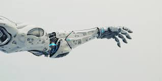

Overview Of Robotics
- Robotics is part of computer science and engineering. Robotics appear in many forms.
- Sometimes they might be a robotic arm and in other cases, they can be a full fledged human type robot.

- They can be used to make processes done by humans automated.
- There is a wide variety of robots made for different purposes.
- There is agricultural robots, medical robots, military robots and more.
- The downside of robots is that humans will lose their jobs.
- As robots become more advanced, more jobs will be automated by them. Robots can save labor costs for the business and can increase the safety.